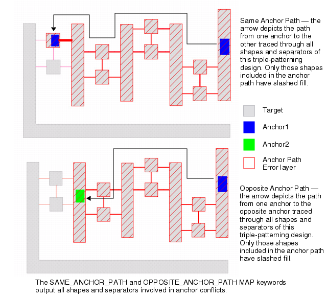
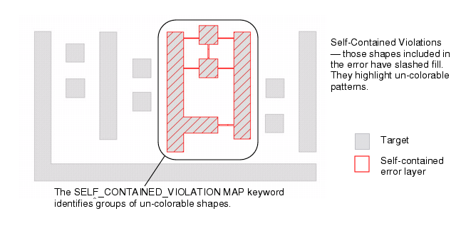
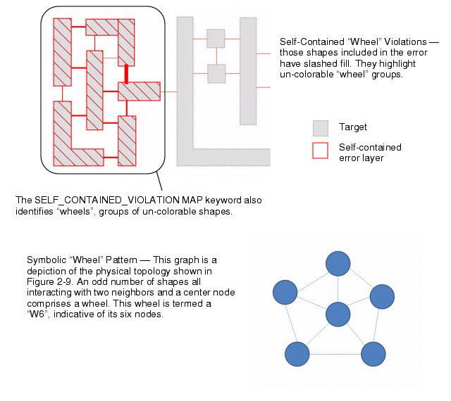
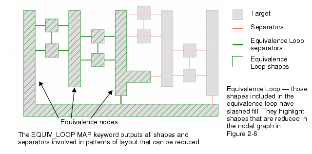
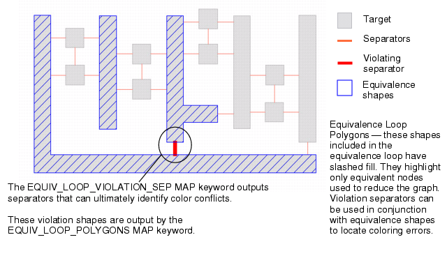
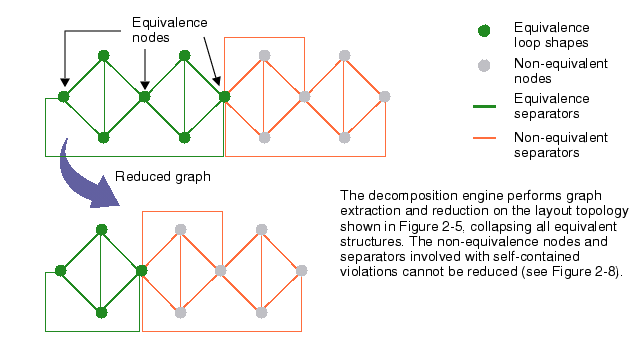

Visualization
keywords assist the user to resolve multi-patterning-related decomposition
failures. Three classes of visualization keywords are supported
for various decomposition errors.
- Anchor Paths
Highlights the shapes and separators between
two or more anchors in violation.
Figure 1. Anchor Path Examples
- Self-Contained
Violations
Highlights all shapes having separators
to all other colorable polygons. Isolates layout configurations that
are inherently not colorable.
Figure 2. Self-Contained Violations
Figure 3. Self-Contained “Wheel” Violations
- Equivalence Loops
Highlights the shapes that, when combined,
form a nodal reduction. These reduced node maps can aid in the resolution
of decomposition problems.
Figure 4. Equivalence Loop
Figure 5. Equivalence Loop Polygons
Figure 6. Equivalence Reduction Map